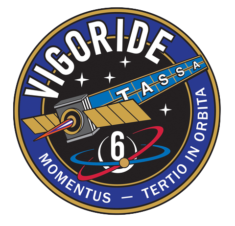

Momentus is a new-space startup founded in 2017 that is focused on providing the infrastructure services necessary to expand human activity in space. The first steps towards this goal are being taken by the Vigoride B2.2 series of spacecraft which are focused on carrying customer payloads (deployable and hosted) and proving out the technologies needed for in-space infrastructure services. I am currently working on the Systems Engineering team at Momentus.
My time at Momentus is split among four main activities:
Vigoride 6 (V6) launched on SpaceX Transporter-7 in April 2023. V6 is the third Vigoride vehicle launched by Momentus (preceeded by Vigoride 3 and Vigoride 5) and, although it carries customer payloads, is intended to be a demonstration mission for the Vigoride platform.
As the Lead Systems Engineer (LSE) for this mission, my role is to deliver a vehicle which met the technical mission requirements and being the technical point of contact for the mission. I was nominated as the LSE for the mission at its kickoff and have been carrying out this role through the flight operations phase of the mission. As LSE I have a wide range of responsibilities including leading anomaly investigation and resolution, leading technical reviews (flight readiness review, operations readiness review,...), and producing deliverables for the launch provider and regulatory agencies. As LSE for V6 I have expanded my technical knowledge of the Vigoride platform and what it takes to build and operate a space system through hands-on trouble shooting of issues during the design, production, and operations phases of the mission. In addition to the technical side, I gained experience being at the head of a technical team with the pressure to meet tight schedules and performance goals with limited resources.

While the initial Vigoride vehicles (including V6) are designed to be expendable, the goal is that the platform moves towards reusability. One key to unlocking this is being able to perform Rendezvous and Proximity Operations (RPO).
As part of this effort, I have been extensively contributing my time to design efforts for an RPO demonstration mission slated to fly on Vigoride 7 launching on Transporter-9. My contribution to this effort has been mostly focused on adapting an automotive LIDAR system for use in space as part of the RPO sensor suite. If successful, these efforts will pave the way for a cost-effective alternative to more commonly used "space grade" LIDAR systems. This work has involved tearing down the LIDAR and working with subject matter experts to make modifications to the unit to follow space best practices. In addition, I am putting the unit through an environmental test campaign to verify that it will survive the space environment. As part of the RPO effort, I have also dedicated my time to developing and executing RPO sensor test plans, generating synthetic data of the space environment for machine learning algorithms, as well as developing and refining RPO demo mission CONOPS.
As star tracker responsible engineer (RE), I am the technical point of contact for the star tracker, a key component of Vigoride's ADCS. This role involves being intimately familiar with the performance and specifications of the hardware as well as delivering integration ready units to Vigoride programs. Early on in my time as star tracker RE, I recognized that we lacked a way to perform functional tests of star tracker units in-house. To resolve this problem, I designed and built a <$300 dark sky simulator system which simulates a star field and allows us to verify that star trackers are functioning nominally either on the bench or once integrated onto the vehicle. This piece of GSE has been used to test the star trackers on V5 and V6 prior to launch.
Working in a startup environment means that problems often come up which anyone can jump upon without worrying about administrative or bureaucratic barriers. Volunteering my time to solve a number of these challenges has led me to vastly broaden my technical knowledge and practical skills beyond what I would have encountered as part of my normal job responsibilities. This has involved developing a number of python tools (propulsion data processing, Monte Carlo schedule analyses, random vibration testing spec generation) as well as becoming the point of contact for running random vibration tests in-house and developing acceptance test plans for flight units based on qualification heritage.